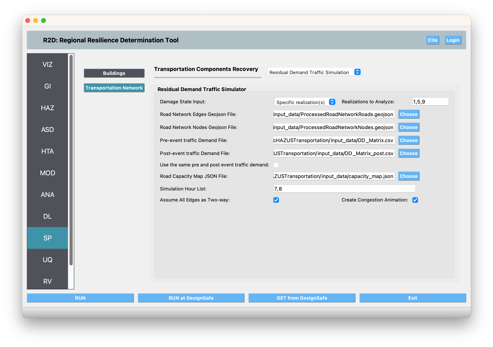

2.9. SP: System Performance¶
The System Performance panel is where the user selects a system performance methodology to perform a system (i.e., network) performance functionality assessment. The following system performance applications are available:
2.9.1. REWET¶
Shown in Fig. 2.9.1.1, the REWET System Performance assessment application has three tabs:

Fig. 2.9.1.1 REWET System-Performance Simulation Panel.¶
Simulation: This tab refers to the input required for simulating the Water Distribution Network (WDN) service restoration after an event. The following inputs are required in REWET’s simulation tab:
Event Time This refers to the time (in seconds) of the event after the simulation starts. For instance, if the time in the example INP file is 12 AM, an event time equal to 7200 corresponds to 2 AM.
Simulation End Time This specifies the time at which the simulation ends.
Terminate Simulation after the Last Job Sequence Is Done This option, if selected, allows the simulation to be ended before the simulation end time is reached if all the jobs defined for recovery are completed.
Terminate Simulation after the Demand Is Met This option, if selected, allows the simulation to be ended before the simulation end time is reached if the ratio of demand after the event to the demand before the event meets or exceeds a given threshold for all demand nodes.
Demand Checking Time Window This parameter defines the time window for checking demand after selecting “Terminate Simulation after the Demand.”
Demand Checking Criteria This shows the ratio of demand after to demand before, which determines when the simulation ends when “Terminate Simulation after the Demand” is selected.
Hydraulic: This tab refers to the input required for hydraulics of the Water Distribution Network (WDN) and damage simulation. The following inputs are required in REWET’s hydraulics tab:
Hydraulic Solver Selection Users can specify their preferred hydraulic solver for their hydraulic simulation based on the available versions of REWET in R2D. The Modified EPANET V2.2 is a customized version of EPANET V2.2 [EPANET2020] that handles flow from negative pressure scenarios.
Minimum Pressure Override and Required Pressure Override These options allow users to override the minimum and required pressure values specified in the INP file. Since the minimum and required pressure values in the example are correct, we leave them unchanged (set as -1 so that they will be ignored).
Pipe Damage Modeling In pipe damage modeling, the relationship between the pipe’s diameter and the equivalent orifice diameter—similar to the approach proposed by Shi and O’Rourke (2008) [ShiandORourke2008]—for each pipe material (or damage type) is defined. The default value is set to Cast Iron, with average values derived from Shi and O’Rourke (2008) [ShiandORourke2008]. If the user does not provide a material (or damage subtype) name list in the asset, R2D assumes the default value to be Cast Iron.

Fig. 2.9.1.2 REWET System-Performance Hydraulic Input Panel.¶
Restoration: This tab refers to the input required for the restoration of the Water Distribution Network (WDN) after the damages from an event. The following inputs are required in REWET’s restoration tab:
Restoration On: When checked, this indicates that REWET runs the restoration (recovery) simulation.
Policy Definition File: This file defines restoration policies according to REWET’s policy definition format.
Minimum Job Time: Specifies the time when a job is assigned to a restoration agent before their shift ends.
Pipe Discovery Rules for Damaged Assets: The user can define the discovery rules for each damaged asset. For a pipe, the discovery can be based on leaks or on a user-specified time series of the discovery ratio. Leak-based discovery helps the user mimic the discovery of buried pipes, in which the pipes are not discovered unless the damage location on the pipe is pressurized for enough time so that the water flows out to the surface of the ground. The user-specified method may also be beneficial when other methods for discovery are used, or the user prefers such a model. Other possible damage discoveries include node-level damage discovery, tank, and pump damages. Based on the available REWET and R2D versions, damage modeling of these asset types (also known as elements) may be included or not. If such damage modeling is being performed, the user may define such an element’s discovery as well.

Fig. 2.9.1.3 REWET System-Performance Restoration Input Panel.¶
Additional information on REWET and descriptions of its output are available at [Naeimi2023].
- EPANET2020
Rossman, L., H. Woo, M. Tryby, F. Shang, R. Janke, AND T. Haxton. EPANET 2.2 User Manual. U.S. Environmental Protection Agency, Washington, DC, EPA/600/R-20/133, 2020.
- Naeimi2023
Naeimi Dafchahi, Sina, and Rachel A. Davidson. Post-Event Restoration Simulation of Water Distribution Systems: A Generally Applicable Approach. 2023. ProQuest Dissertations & Theses.
- ShiandORourke2008(1,2)
Shi, P, and T D O’Rourke. 2008. Seismic Response Modeling of Water Supply Systems. Buffalo- NY: MCEER-University at Buffalo. https://www.buffalo.edu/mceer/catalog.host.html/content/shared/www/mceer/publications/MCEER-08-0016.detail.html.
2.9.2. Residaul Demand Traffic Simulation¶
The Residual Demand Traffic Simulation application is a macroscopic agent-based model that simulates the traffic pattern of urban highway transportation system at a city-scale. he model features a detailed road network and hour-longsimulation time step to capture realistic variations in traffic conditions. Agent speed is determined according to a simplified volume-delaymacroscopic relationship, which is more efficient than applying microscopic rules (e.g., car following) for evaluating city-scale trafficconditions. The model is based on a pseudo-equilibrium dynamic traffic assignment theory and is originally developed by [Zhao2019]. Below describes the input required to run the Residual Demand Traffic Simulation in R2D and the output generated by the model. Please refer to [Zhao2019] for the theory and more details behind the model.
The overarching workflow of the Residual Demand Simulation is to run the traffic simulation first using the undamaged roadway network and pre-event traffic demand. The simulation is then repeated considering the post-event traffic demand and reduced roadway capacity caused by damaged bridges, tunnels, and road segments. Each simulation provides estimations of the travel time required by each trip demand and the dynamic evolutions of the traffic volume on each roadway segment. The difference between the two simulations is considered as the indicator of the resilience of the transportation system.
- The input user interface of the Residual Demand Traffic Simulation is shown in Fig. 2.9.2.1. The following inputs are required in the Residual Demand Traffic Simulation panel:
- Damage State Input
This input allows the user to specify which damage state realization to be considered in the simulation. In the damage and loss analysis stage, a number of damage state (DS) realizations are generated. The number of the DS realizations are defined by the “Sample Size” field in the DL: Damage and Loss panel. The user can select one or multiple of these damage state realizations to be considered in the traffic simulation. If “Most likely damage state” is selected, the most likely damage state of all DS realizations will be used in the traffic simulation. The simulation results describes the traffic pattern under the most likely damage state. However, the most likely traffic resilience metrics (e.g., average travel delay time) genenerally does not correspond to the most likely damage state so the estimated traffic resilience metrics may be biased. If “Specific realization(s)” is selected, traffic simulation will repeat one or multiple times, each time considering the one specific damage state realization. You can select to run all available DS realizations by inputing “1-N”, where N is the Sample Size defined in the DL: Damage and Loss panel, generate your only sample and input your samples in the format of “1,5,9,…”.
- Road Network Edges Geojson File
This file defines the edges of the roadway network in a geojson format. The attributes required are “NumOfLanes”, “MaxMPH”, “StartNode”, and “EndNode”. This geojson file can be created using SimCenter’s BRAILS tool available here. An example of the geojson file can be found in Example 14, which is also available here.
- Road Network Nodes Geojson File
This file defines the nodes of the roadway network in a geojson format. The attributes required is “nodeID”. This geojson file can be created using SimCenter’s BRAILS tool available :ref:`here <lbl-BrailsTransportation>`_. An example of the geojson file can be found in Example 14, which is also available here.
- Pre-event Traffic Demand Geojson File
This file defines the pre-event traffic demand in a .csv format. The traffic demand file needs to contain columns: “agent_id”, “origin_nid”, “destin_nid”, “hour” and “quarter”. The “origin_nid” defines the id of the origin node of a trip and the “destin_nid” defines the id of the destination node. The “hour” and “quarter” define the start time of the trip. In the residual demand simulator, each hour is divided into 6 “quarters”, with quarter 0 stands for 0-10 minites of an hour and quater 1 stands for 10-20 minitues of an hour, etc. An example of the traffic demand file can be found in Example 14, which is also available here. Currently, R2D does not support traffic demand generation and the user needs to provide the traffic demand file. Such traffic demand can be generated using travel demand models or other traffic simulation tools, such as the Bay Area MTC’s travel model.
- Post-event Traffic Demand Geojson File
One can select to use the same pre-event traffic demand as the post-event traffic demand by checking the Use the same pre and post event traffic demand check box. If the post-event traffic demand is belived to be different from pre-event demand, a different file can be provided. The post-event traffic demand file should have the same format as the pre-event traffic demand file.
- Road Capacity Map JSON File
This file defines the capacity of each type of transportation infrastructure component under various damage state. The file should be in a JSON format. The JSON file should be defined as a dictionary with the key being one of “Bridge”, “Tunnel”, “Roadway” and the value being a dictionary with the key being the damage state and the value being the remaining capacity of the edge. An example of the road capacity map file can be found in Example 14, which is also available here.
- Simulation Hour List
The simulation hour list defines the hours of the day that the simulation will be run. The hours should be separated by commas. For example, “0,1,2,..”. The hours input here need to be included in the “hour” column of the traffic demand file. If this field is left empty, the simulation will run for all hours in the traffic demand file.
- Assume All Edges as Two-way
If this check box is checked, all edges in the road network will be assumed as two-way. If this check box is not checked, the direction of the edges will be determined by the “StartNode” and “EndNode” attributes in the road network edges geojson file.
- Create Congestion Animation
If this check box is checked, the simulation will generate an animation of the congestion on the road network. The animation will be saved in the output directory. Creating the congesion animation will increase the simulation time, so it is recommended to only check this box when a small number of realizations are simulated.
Output of the Residual Demand Traffic Simulation can be found in the “ResidualDemand” folder in the “tmp.SimCenter” folder inside your local working directory. The output includes the following: - edges.csv and nodes.csv
The road network edges and nodes geojson format are converted into csv format, which is needed by the residual demand simulator.
- travel_delay_stats.csv
The statistics (across realizations) of travel delay time, which includes the average and standard deviation of travel delay time for each trip. The pre-event travel time are described in columns with the postfix “_undamaged” and the post-event travel time are described in columns with the postfix “_damaged”. The “_damaged” columns of some rows are empty, which is because these trips don’t exist in the post-event traffic demand. Similar, if the “_undamaged” columns of some rows are empty, it is because these trips don’t exist in the pre-event traffic demand.
- undamaged folder
The simularion result of the undamaged road network. The folder contains the following files: - congestion.gif
A plot of the ratio of traffic volume over capacity of each edge at each time step. The plot is saved as a gif file. If the ratio is greater than 1, the edge is congested, i.e., the time required to passing the edge is longer than the free flow time.
- edge_vol
A folder containing the traffic volume of each edge at each time step. The traffic volume is saved as a csv file.
- trip_info
A folder containing the information of each trip at each time step. The information includes the trip id, the origin node id, the destination node id, the start time of the trip, the end time of the trip, and the travel time (saved under the “travel_time_used” column) of the trip. The information is saved as a csv file.
- workdir.x
A list of folders containing the simulation results of each realization. The folder name is the realization number. The files in these folders are the same as the files in the “undamaged” folder.
Fig. 2.9.2.1 Residual Demand Traffic Simulation Input Panel.¶
- Zhao2019(1,2)
Zhao, B., Kumar, K., Casey, G., & Soga, K. (2019). Agent-based model (ABM) for city-scale traffic simulation: A case study on San Francisco. In International Conference on Smart Infrastructure and Construction 2019 (ICSIC) Driving data-informed decision-making (pp. 203-212). ICE Publishing.